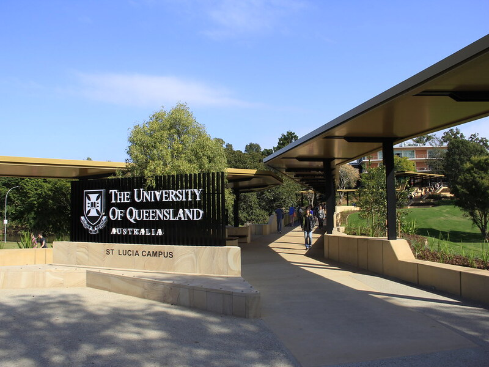
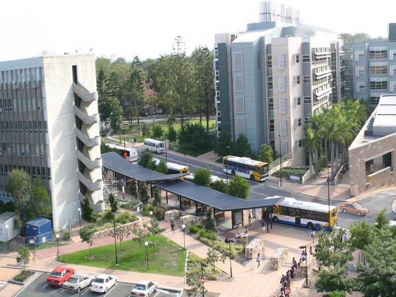

Public Transport

UQ Lakes Bus Stop
Situated near the UQ Lakes, this stop provides many busways to and from the University.

Chancellors Place Bus Stop
Situated near the Chancellors Place (opposite side of the campus to Lakes), this stop provides many busways to and from the University.